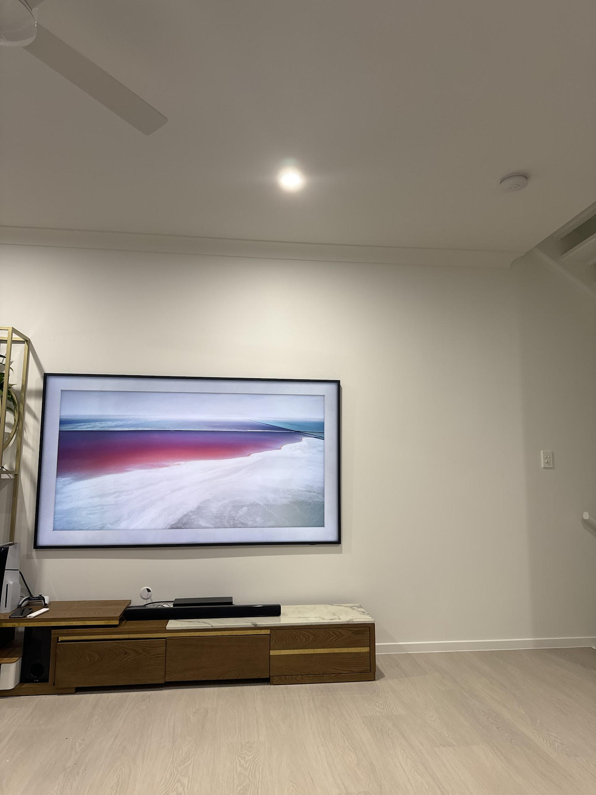
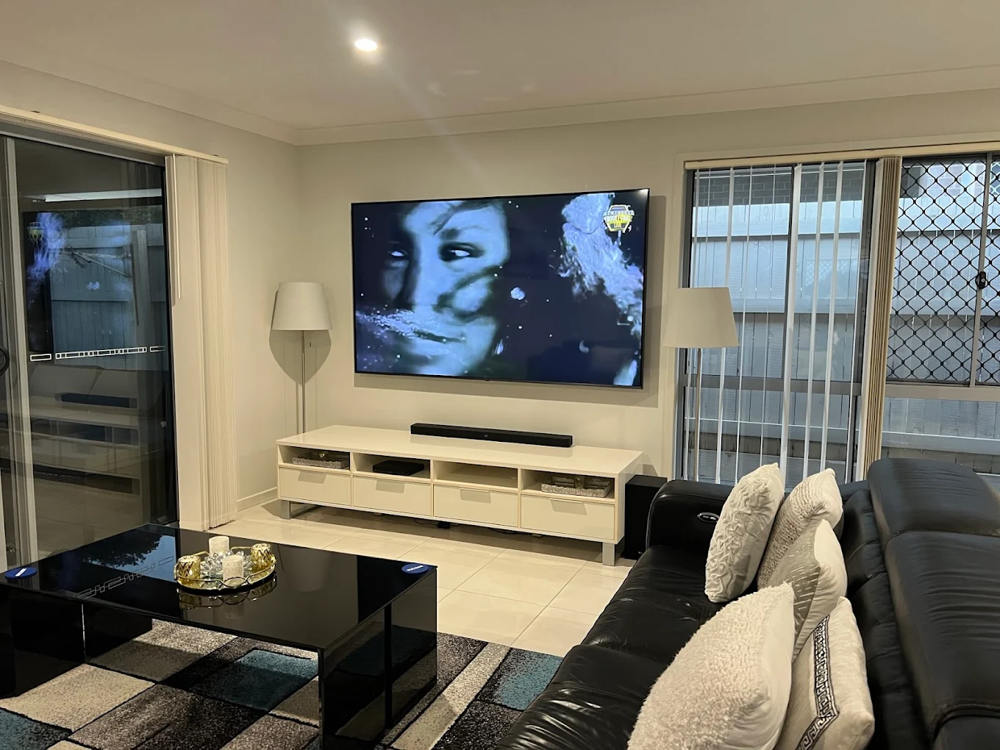

Top Samsung Models We Install
The 5 Samsung TVs Brisbane Customers Mount Most
1. Samsung S95F OLED (QD-OLED Flagship)
Sizes: 55", 65", 77", 83"
VESA pattern: 300x300mm (55/65"), 400x300mm (77"), 400x400mm (83")
Weight: 17 kg (55") to 40 kg (83")
Type: QD-OLED — up to 2000+ nits, 165Hz gaming
Brisbane installation tip: The S95F has an external One Connect Box that routes every cable through a single ultra-thin connector to the TV. We always plan a separate enclosure or media-cabinet location for the Connect Box before we mount the screen — otherwise you end up with a beautiful wall-mounted TV and a box of cables sitting on the floor. The panel itself is only ~11mm thick, so we treat it like glass: two-person handling, microfibre-padded work surface, never any pressure on the centre.

2. Samsung QN90F Neo QLED (Mini-LED)

Sizes: 43", 50", 55", 65", 75", 85", 98"
VESA pattern: 300x300mm (55"), 400x300mm (65"), 400x400mm (75/85"), 600x400mm (98")
Weight: 18 kg (55") up to 78 kg (98")
Type: Neo QLED Mini-LED — flagship LCD with anti-glare matte coating
Brisbane installation tip: The 98" QN90F is one of the heaviest TVs we mount. Brisbane homes built since 2010 typically have 90mm timber studs at 450mm centres — we always span at least three studs with a reinforced backing plate for screens this size, and bring two technicians for the safety lift. The matte anti-reflection coating is brilliant for Brisbane's bright living rooms but it's also a magnet for fingerprints, so we wear nitrile gloves throughout the install.
3. Samsung The Frame LS03F (2025 model)
Sizes: 43", 50", 55", 65", 75", 85"
VESA pattern: 200x200mm (43/50"), 300x300mm (55/65"), 400x400mm (75/85")
Weight: 9 kg (43") to 37 kg (85")
Type: QLED with matte anti-glare display — designed to look like a framed artwork
Brisbane installation tip: The Frame ships with the Samsung Slim Fit Wall Mount, which sits the TV less than 25mm from the wall — it's the whole point of the product. The catch is the Slim Fit Mount has zero adjustment after installation, so the wall must be dead level and the cable trench must be planned before the TV goes up. We always pre-cut the recess, route the One Connect Box cable, and do a dry-fit before final mounting. The magnetic bezel options (modern, beveled, etc.) make it the most popular Samsung TV in Hendra, Clayfield, and Hamilton homes.
4. Samsung Q60F / Q60D QLED (Entry QLED)

Sizes: 43", 50", 55", 65", 75", 85"
VESA pattern: 200x200mm (55"), 400x300mm (65/75"), 400x400mm (85")
Weight: 11 kg (50") to 38 kg (85")
Type: Edge-lit QLED — the most affordable QLED in the lineup
Brisbane installation tip: The Q60F is a workhorse — lightweight, slim, no One Connect Box, fits any standard tilting bracket. It's the most-mounted TV in Brisbane bedrooms and second-living rooms because it offers QLED colour at a price that won't make you nervous about the install. Standard fixed or tilt bracket plus our $99 cable concealment add-on takes about 60 minutes start to finish.
5. Samsung DU8000 Crystal UHD
Sizes: 43", 50", 55", 65", 75", 85"
VESA pattern: 200x200mm (55"), 300x300mm (65/75"), 600x400mm (85")
Weight: 13 kg (55") to 35 kg (85")
Type: Crystal UHD LED — Samsung's mainstream 4K range
Brisbane installation tip: The DU8000 is the most popular TV at JB Hi-Fi Chermside and Harvey Norman Aspley. Ultra-slim, lightweight, and friendly to any standard bracket — we typically wrap up a DU8000 install in under 45 minutes. Perfect for first-time TV mounting customers because the price point matches the install cost ratio everyone expects.